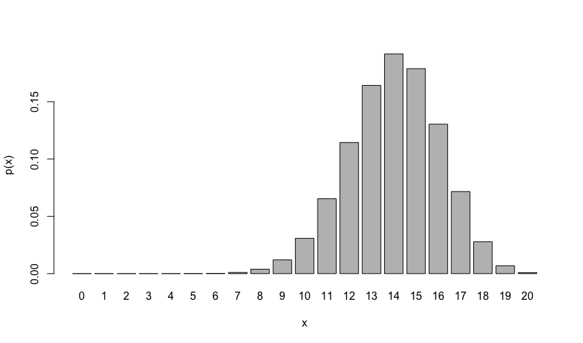
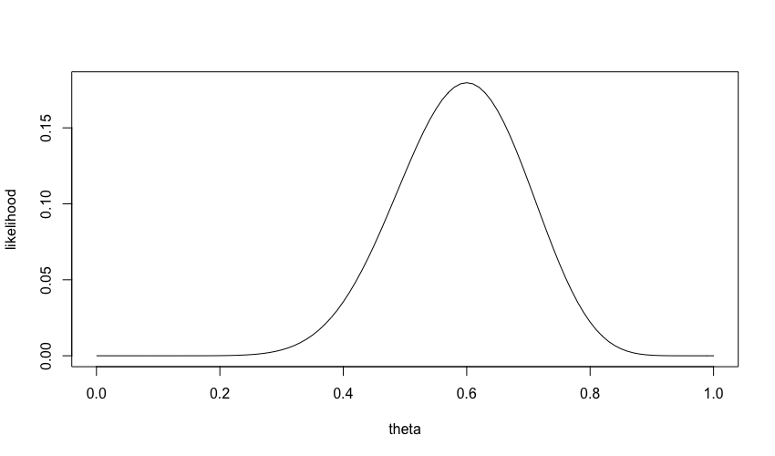
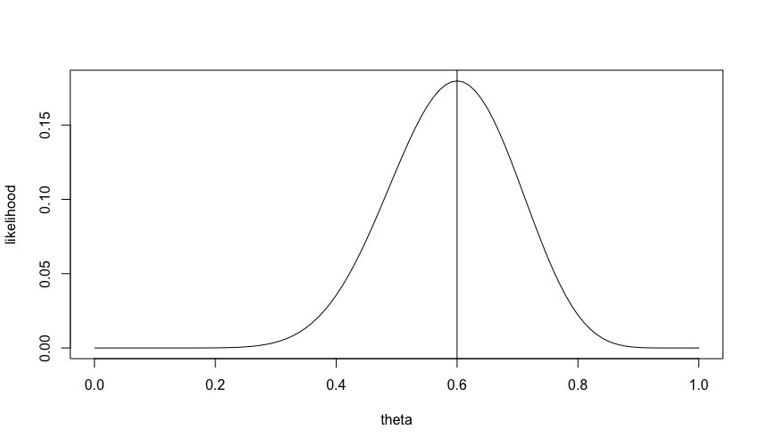
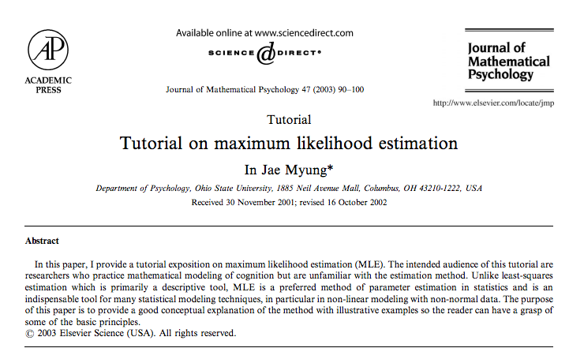

Maximum Likelihood Estimation
Recall
Last time, we gave a formal definition for a probability function. An example was the binomial distribution for \(N\) independent Bernoulli trials (e.g., coin flips):
\[ f(x\mid \theta) = {N\choose x} \theta^x(1-\theta)^{N-x} \]
where \(x\) = # of successes, and \(\theta\) = probability of success.
Probability function
Suppose \(N=20\) and \(\theta=0.7\).
barplot(dbinom(0:20,size=20,prob=0.7),
names.arg=0:20,
ylab="p(x)",
xlab="x")

Data and parameters
\[ f(x\mid \theta) = {N\choose x} \theta^x(1-\theta)^{N-x} \]
\vspace{1cm}
This function gives us the probability of data, given a specific parameter
Data and parameters
What if we switched these?
\[ f(\theta \mid x) = {N\choose x} \theta^x(1-\theta)^{N-x} \]
\vspace{1cm}
This function then gives us the likelihood of a range of parameters, given a specific data point
Likelihood function
Suppose we observed 12 successes in 20 trials:
theta=seq(from=0, to=1, by=0.01)
plot(theta, dbinom(x=12, size=20, prob=theta),
type="l",ylab="likelihood")

Likelihood function
Suppose we observed 12 successes in 20 trials:
\vspace{1cm}
Natural question – what value of \(\theta\) is most likely, given the data?
Likelihood function
Suppose we observed 12 successes in 20 trials:
\vspace{1cm}
Natural question – what value of \(\theta\) is most likely, given the data?
Answer: \(\theta=0.6\)

Maximum likelihood estimation
A key problem in statistical inference is how to infer from sample data to population parameters.
\vspace{1cm}
Maximum likelihood estimation is one solution to this problem
Maximum likelihood estimation

Maximum likelihood estimation
Basic workflow:
- collect data
- decide on a "model" for the data (e.g., binomial, normal, etc.)
- define a likelihood function based on the underlying model
- find the parameter value(s) that maximize the likelihood function
Three examples
We will do three examples of MLE:
- binomial model
- normal model
- ex-Gaussian model
Example 1
Suppose that in a sequence of 20 coin flips, we observe 12 successes ("heads"). What is the maximum likelihood estimate for \(\theta\)?
\vspace{5mm}
Step 1 – collect data
- done: we observed \(x=12\) successes
Example 1
Suppose that in a sequence of 20 coin flips, we observe 12 successes ("heads"). What is the maximum likelihood estimate for \(\theta\)?
\vspace{5mm}
Step 2 – choose a model
- assume a binomial model
\[ x \sim \text{Binomial}(\theta,n) \]
Example 1
Suppose that in a sequence of 20 coin flips, we observe 12 successes ("heads"). What is the maximum likelihood estimate for \(\theta\)?
\vspace{5mm}
Step 3 – define likelihood function
- Note: we will actually define the "negative log-likelihood" function
nll.binom <- function(data,par){
return(-log(dbinom(data, size = 20, prob = par)))
}
Example 1
Suppose that in a sequence of 20 coin flips, we observe 12 successes ("heads"). What is the maximum likelihood estimate for \(\theta\)?
\vspace{5mm}
Step 4 – find parameter that maximizes the likelihood function
- Note: we will actually minimize the negative log-likelihood
optim(par=0.5, fn=nll.binom, data=12)